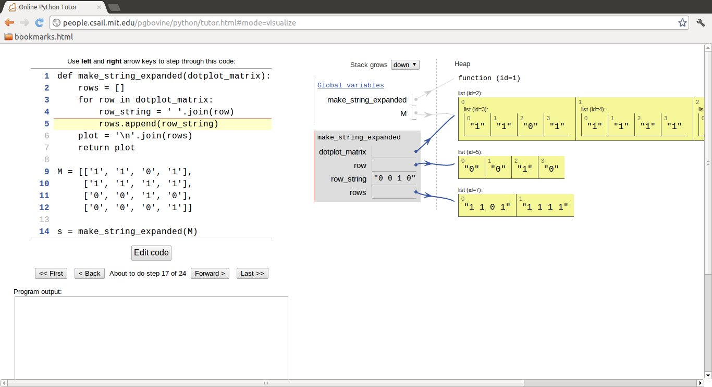

Life is definitely digital. The genetic code of all living organisms are represented by a long sequence of simple molecules called nucleotides, or bases, which makes up the Deoxyribonucleic acid, better known as DNA. There are only four such nucleotides, and the entire genetic code of a human can be seen as a simple, though 3 billion long, string of the letters A, C, G, and T. Analyzing DNA data to gain increased biological understanding is much about searching in (long) strings for certain string patterns involving the letters A, C, G, and T. This is an integral part of bioinformatics, a scientific discipline addressing the use of computers to search for, explore, and use information about genes, nucleic acids, and proteins.
Below are some very simple examples on DNA analysis that brings together basic building blocks in programming: loops, if tests, and functions.
Given some string dna containing the letters A, C, G, or T, representing the bases that make up DNA, we ask the question: how many times does a certain base occur in the DNA string? For example, if dna is ATGGCATTA and we ask how many times the base A occur in this string, the answer is 3.
A general Python implementation answering this problem can be done in many ways. Several possible solutions are presented below.
The most straightforward solution is to loop over the letters in the string, test if the current letter equals the desired one, and if so, increase a counter. Looping over the letters is obvious if the letters are stored in a list. This is easily done by converting a string to a list:
>>> list('ATGC')
['A', 'T', 'G', 'C']
Our first solution becomes
def count_v1(dna, base):
dna = list(dna) # convert string to list of letters
i = 0 # counter
for c in dna:
if c == base:
i += 1
return i
Python allows us to iterate directly over a string without converting it to a list:
In fact, all built-in objects in Python which contain a set of elements in a particular sequence allow a for loop construction of the type for element in object.>>> for c in 'ATGC': ... print c A T G C
A slight improvement of our solution is therefore to iterate directly over the string:
def count_v2(dna, base):
i = 0 # counter
for c in dna:
if c == base:
i += 1
return i
dna = 'ATGCGGACCTAT'
base = 'C'
n = count_v2(dna, base)
# printf-style formatting
print '%s appears %d times in %s' % (base, n, dna)
# or (new) format string syntax
print '{base} appears {n} times in {dna}'.format(
base=base, n=n, dna=dna)
We have illustrated two alternative ways of writing out text where the value of variables are to be inserted in "slots" in the string.
It is fundamental for correct programming to understand how to simulate a program by hand, statement by statement. Three tools are effective for helping you reach the required understanding of performing a simulation by hand: (i) printing variables, (ii) using a debugger, and (iii) using an online program flow tool.
Inserting print statements and examining the about is the simplest approach to investigating what is going on:
def count_v2_demo(dna, base):
print 'dna:', dna
print 'base:', base
i = 0 # counter
for c in dna:
print 'c:', c
if c == base:
print 'True if test'
i += 1
return i
n = count_v2_demo('ATGCGGACCTAT', 'C')
An efficient way to explore this program is to run it in a debugger where we can step through each statement and see what is printed out. Start ipython in a terminal window and run the program count_v2_demo.py (download or online viewing) with a debugger: run -d count_v2_demo.py. Use s (for step) to step through each statement, or n (for next) for proceeding to the next statement without stepping through a function that is called.
ipdb> s
> /some/disk/user/bioinf/src/count_v2_demo.py(2)count_v2_demo()
1 1 def count_v1_demo(dna, base):
----> 2 print 'dna:', dna
3 print 'base:', base
ipdb> s
dna: ATGCGGACCTAT
> /some/disk/user/bioinf/src/count_v2_demo.py(3)count_v2_demo()
2 print 'dna:', dna
----> 3 print 'base:', base
4 i = 0 # counter
Observe the output of the print statements. One can also
print a variable explicitly:
Misunderstanding of the program flow is one of the most frequent sources of programming errors, so whenever in doubt about any program flow, enter a debugger to establish confidence.ipdb> print base C
The Python Online Tutor is, at least for small programs, a splendid alternative to debuggers. Go to the webpage, erase the sample code and paste in your own code. Press Visual execution, then Forward to execute statements one by one. The status of variables are explained to the right, and the text field below the program shows the output from print statements. An example is shown in Figure bioinf:fig:pot.
Although it is natural in Python to iterate over the letters in a string (or more generally over elements in a sequence), programmers with experience from other languages (Fortran, C and Java are examples) are used to for loops with an integer counter running over a all indices in a string or array:
def count_v3(dna, base):
i = 0 # counter
for j in range(len(dna)):
if dna[j] == base:
i += 1
return i
Python indices always start at 0 so the legal indices for our string become 0, 1, ..., len(dna)-1, where len(dna) is the number of letters in the string dna. The range(x) function returns a list of integers 0, 1, ..., x-1, implying that range(len(dna)) generates all the legal indices for dna.
The while loop equivalent to the last function reads
def count_v4(dna, base):
i = 0 # counter
j = 0 # string index
while j < len(dna):
if dna[j] == base:
i += 1
j += 1
return i
Correct indentation is here crucial: a typical error is to fail indenting the j += 1 line correctly.
The idea now is to create a list m where m[i] is True if dna[i] equals the letter we search for (base). The number of True values in m is then the number of base letters in dna. We can use the sum function to find this number because doing arithmetics with boolean lists automatically interprets True as 1 and False as 0. That is, sum(m) returns the number of True elements in m. A possible function doing this is
def count_v5(dna, base):
m = [] # matches for base in dna: m[i]=True if dna[i]==base
for c in dna:
if c == base:
m.append(True)
else:
m.append(False)
return sum(m)
Shorter, more compact code is often a goal if the compactness enhances readability. The four-line if test in the previous function can be condensed to one line using the inline if construction: if condition value1 else value2.
def count_v6(dna, base):
m = [] # matches for base in dna: m[i]=True if dna[i]==base
for c in dna:
m.append(True if c == base else False)
return sum(m)
The inline if test is in fact redundant in the previous function because the value of the condition c == base can be used directly: it has the value True or False. This saves some typing and adds clarity, at least to Python programmers:
def count_v7(dna, base):
m = [] # matches for base in dna: m[i]=True if dna[i]==base
for c in dna:
m.append(c == base)
return sum(m)
Building a list via a for loop can often be condensed to one line by using list comprehensions: [expr for e in sequence], where expr is some expression normally involving the iteration variable e. In our last example, we can introduce a list comprehension
def count_v8(dna, base):
m = [c == base for c in dna]
return sum(m)
Here it is tempting to get rid of the m variable and reduce the function body to a single line:
def count_v9(dna, base):
return sum([c == base for c in dna])
The DNA string is usually huge - 3 billion letters for the human species. Making a boolean array with True and False values therefore increases the memory usage by a factor of two in our sample functions count_v5 to count_v9. Summing without actually storing an extra list is desireable. Fortunately, sum([x for x in s]) can be replaced sum(x for x in s), where the latter sums the elements (x) in s as x visits the elements of s one by one. Removing the brackets therefore avoids first making a list and then applying sum on that list. This is a minor modification of the count_v9 function:
def count_v10(dna, base):
return sum(c == base for c in dna)
Below we shall measure the impact of the various program constructs on the CPU time.
Instead of making a boolean list with elements expressing whether a character matches the given base or not, we may collect all the indices of the matches. This can be done by adding an if test to the list comprehension:
def count_v11(dna, base):
return len([i for i in range(len(dna)) if dna[i] == base])
A debugger or the Python Online Tutorial do not help so much to understand this compact code. A better approach is to examine the list comprehension in an interactive Python shell:
The element i in the list comprehension is only made when dna[i] == base.>>> dna = 'AATGCTTA' >>> base = 'A' >>> indices = [i for i in range(len(dna)) if dna[i] == base] >>> indices [0, 1, 7] >>> print dna[0], dna[1], dna[7] # check A A A
Very often when you set out to do a task in Python, there is already functionality for the task in the object itself, in the Python libraries, or in third-party libraries found on the Internet. Counting how many times a character (or substring) base appears in a string dna is obviously a very common task so Python supports it by dna.count(base):
def count_v12(dna, base):
return dna.count(base)
Now we have 11 different versions of how to count the occurences of a letter in a string. Which one of these implementations is the fastest? To answer the question we need some test data, which should be a huge string dna.
The simplest way of generating a long string is to repeat a character a large number of times:
The resulting string is just 'AAA...A, of length N, which is fine for testing the efficiency of Python functions. Nevertheless, it is more exciting to work with a DNA string with letters from the whole alphabet A, C, G, and T. To make a DNA string with a random composition of the characters we can first make a list of random characters and then join all those characters to a string:N = 1000000 dna = 'A'*N
import random
alphabet = list('ATGC')
dna = [random.choice(alphabet) for i in range(N)]
dna = ''.join(dna) # join the character elements to a string
The random.choice(x) function selects an element in the list
x at random.
Note that N is very often a large number. In Python version 2.x, range(N) generates a list of N integers. We can avoid this by using xrange which generates an integer at a time and not the whole list. In Python version 3.x, the range function is actually the xrange function in version 2.x. Using xrange, combining the statements, and wrapping the construction of a random DNA string in a function, gives
import random
def generate_string(N, alphabet='ATCG'):
return ''.join([random.choice(alphabet) for i in xrange(N)])
dna = generate_string(600000)
#dna = generate_string(6000000)
The call generate_string(10) may generate something like AATGGCAGAA.
Our next goal is to see how much time the count_v9 and count_v10 functions spend on counting letters in a huge string as generated above. Measuring the time spent in a program can be done by the time module:
The time.clock() function returns the CPU time spent in the program since its start. If the interest is in the total time, also including reading and writing files, time.time() is the appropriate function to call.import time ... t0 = time.clock() # do stuff t1 = time.clock() cpu_time = t1 - t0
Running through all our functions made so far and recording timings can be done by
import time
functions = [count_v1, count_v2, count_v3, count_v4,
count_v5, count_v6, count_v7, count_v8,
count_v9, count_v10, count_v11, count_v12]
timings = [] # timings[i] holds CPU time for functions[i]
for function in functions:
t0 = time.clock()
function(dna, 'A')
t1 = time.clock()
cpu_time = t1 - t0
timings.append(cpu_time)
In Python, functions are ordinary objects so making a list of functions is no more special than making a list of strings or numbers.
We can now iterate over timings and functions simultaneously via zip to make a nice printout of the results:
for cpu_time, function in zip(timings, functions):
print '{f:<9s}: {cpu:.2f} s'.format(
f=function.func_name, cpu=cpu_time)
Timings on a MacBook Air 11 running Ubuntu show that the functions using list.append require almost the double of the time of the functions that work with list comprehensions. Even faster is the simple iteration over the string. However, the built-in count functionality of strings (dna.count(base)) runs over 30 times faster than the best of our handwritten Python functions! The reason is that the for loop needed to count in dna.count(base) is implemented in C and runs very much faster than loops in Python.
A clear lesson learned is: google around before you start out to implement what seems to be a quite common task. Others have probably already done it for you, and most likely is their solution much better than what you can (easily) come up with.
All the functions presented above, including the timings, can be found in the file count.py (download or online viewing).
Your genetic code is essentially the same from you are born until you die, and the same in your blood and your brain. Which genes that are turned on and off make the difference between the cells. This regulation of genes is orchestrated by an immensely complex mechanism, which we have only started to understand. A central part of this mechanism consists of molecules called transcription factors that float around in the cell and attach to DNA, and in doing so turn nearby genes on or off. These molecules bind preferentially to specific DNA sequences, and this binding preference pattern can be represented by a table of frequencies of given symbols at each position of the pattern. More precisely, each row in the table corresponds to the bases A, C, G, and T, while column j reflects how many times the base appears in position j in the DNA sequence.
For example, if our set of DNA sequences are TAG, GGT, and GGG, the table becomes
| base | 0 | 1 | 2 |
| A | 0 | 1 | 0 |
| C | 0 | 0 | 0 |
| G | 2 | 2 | 2 |
| T | 1 | 0 | 1 |
From this table we can read that base A appears once in index 1 in the DNA strings, base C does not appear at all, base G appears twice in all positions, and base T appears once in the beginning and end of the strings.
In the following we shall present different data structures to hold such a table and different ways of computing them. The table is known as a frequency matrix in bioinformatics, and this is the term used here too.
Since we know that there are only four rows in the frequency matrix, an obvious data structure would be four lists, each holding a row. A function computing these lists may look like
def freq_lists(dna_list):
n = len(dna_list[0])
A = [0]*n
T = [0]*n
G = [0]*n
C = [0]*n
for dna in dna_list:
for index, base in enumerate(dna):
if base == 'A':
A[index] += 1
elif base == 'C':
C[index] += 1
elif base == 'G':
G[index] += 1
elif base == 'T':
T[index] += 1
return A, C, G, T
We need to initialize the lists with the right length and a zero for each element, since each list element is to be used as a counter. Creating a list of length n with object x in all positions is done by [x]*n. Finding the proper length is here carried out by inspecting the length of the first element in dna_list, assuming that all elements have the same length.
In the for loop we apply the enumerate function which is used to extract both the element value and the element index when iterating over a sequence. For example,
>>> for index, base in enumerate(['t', 'e', 's', 't']): ... print index, base ... 0 t 1 e 2 s 3 t
Here is a call and printout of the results:
with outputdna_list = ['GGTAG', 'GGTAC', 'GGTGC'] A, C, G, T = freq_lists(dna_list) print A print C print G print T
[0, 0, 0, 2, 0] [0, 0, 0, 0, 2] [3, 3, 0, 1, 1] [0, 0, 3, 0, 0]
The frequency matrix can also be represented as a nested list M such that M[i][j] is the frequency of base i in position j in the set of DNA strings. Here i is an integer, where 0 corresponds to A, 1 to T, 2 to G, and 3 to C. The frequency is the number of times base i appears in position j in a set of DNA strings. Sometimes this number is divided by the number of DNA strings in the set so that the frequency is between 0 and 1. Note all the DNA strings must have the same length.
The simplest way to make a nested list is to insert the A, C, G, and T lists into another list:
>>> frequency_matrix = [A, C, G, T] >>> frequency_matrix[2][3] 2 >>> G[3] # same element 2
Nevertheless, we can illustrate how to compute this type of nested list directly:
def freq_list_of_lists_v1(dna_list):
# Create empty frequency_matrix[i][j] = 0
# i=0,1,2,3 corresponds to A,T,G,C
# j=0,...,length of dna_list[0]
frequency_matrix = [[0 for v in dna_list[0]] for x in 'ACGT']
for dna in dna_list:
for index, base in enumerate(dna):
if base == 'A':
frequency_matrix[0][index] +=1
elif base == 'C':
frequency_matrix[1][index] +=1
elif base == 'G':
frequency_matrix[2][index] +=1
elif base == 'T':
frequency_matrix[3][index] +=1
return frequency_matrix
As in the case with individual lists we need to initialize all elements in the nested list to zero.
A call and printout,
results indna_list = ['GGTAG', 'GGTAC', 'GGTGC'] frequency_matrix = freq_list_of_lists_v1(dna_list) print frequency_matrix
[[0, 0, 0, 2, 0], [0, 0, 0, 0, 2], [3, 3, 0, 1, 1], [0, 0, 3, 0, 0]]
The if tests in the freq_list_of_lists_v1 are somewhat cumbersone, especially if want to extend the code to other bioinformatics problems where the alphabet is larger. What we want is a mapping from base, which is a character, to the corresponding index 0, 1, 2, or 3. A Python dictionary represents such mappings:
>>> base2index = {'A': 0, 'C': 1, 'G': 2, 'T': 3}
>>> base2index['G']
2
With the base2index dictionary we do not need the series of
if tests and the alphabet 'ATGC' could be much larger
without affecting the length of the code.
def freq_list_of_lists_v2(dna_list):
frequency_matrix = [[0 for v in dna_list[0]] for x in 'ACGT']
base2index = {'A': 0, 'C': 1, 'G': 2, 'T': 3}
for dna in dna_list:
for index, base in enumerate(dna):
frequency_matrix[base2index[base]][index] += 1
return frequency_matrix
As long as each sublist in a list of lists has the same length, a list of lists can be replaced by a Numerical Python (numpy) array. Processing of such arrays is often much more efficient than processing of the nested list data structure. To initialize a two-dimensional numpy array we need to know its size, here 4 times len(dna_list[0]). Only the first line in the function freq_list_of_lists_v2 needs to be changed in order to utilize a numpy array:
import numpy as np
def freq_numpy(dna_list):
frequency_matrix = np.zeros((4, len(dna_list[0])), dtype=np.int)
base2index = {'A': 0, 'C': 1, 'G': 2, 'T': 3}
for dna in dna_list:
for index, base in enumerate(dna):
frequency_matrix[base2index[base]][index] += 1
return frequency_matrix
The resulting frequency_matrix object can be indexed as [b][i] or [b,i], with integers b and i. A typical indexing is frequency_matrix[base2index['C'],i].
Instead of going from a character to an integer index via base2index, we may prefer to index frequency_matrix by the base name and the position index directly: like in`['C'][14]`. This is the most natural syntax for a user of the frequency matrix. The relevant Python data structure is then a dictionary of lists. That is, frequency_matrix is a dictionary with keys 'A', 'C', 'G', and 'T'. The value for each key is a list. Let us now also extend the flexibility such that dna_list can have DNA strings of different lengths. The lists in frequency_list will have lengths equal to the longest DNA string. A relevant function is
def freq_dict_of_lists_v1(dna_list):
n = max([len(dna) for dna in dna_list])
frequency_matrix = {
'A': [0]*n,
'C': [0]*n,
'G': [0]*n,
'T': [0]*n,
}
for dna in dna_list:
for index, base in enumerate(dna):
frequency_matrix[base][index] += 1
return frequency_matrix
Running
results in the outputfrequency_matrix = freq_dict_of_lists_v1(dna_list) import pprint # for nice printout of nested data structures pprint.pprint(frequency_matrix)
{'A': [0, 0, 0, 2, 0],
'C': [0, 0, 0, 0, 2],
'G': [3, 3, 0, 1, 1],
'T': [0, 0, 3, 0, 0]}
The initialization of frequency_matrix in the above code can be made more compact by using a dictionary comprehension:
dict = {key: value for key in some_sequence}
Here,
frequency_matrix = {base: [0]*n for base in 'ACGT'}
Adopting this construction in the freq_dict_of_lists_v1 function
leads to a slightly more compact version,
def freq_dict_of_lists_v2(dna_list):
n = max([len(dna) for dna in dna_list])
frequency_matrix = {base: [0]*n for base in 'ACGT'}
for dna in dna_list:
for index, base in enumerate(dna):
frequency_matrix[base][index] += 1
return frequency_matrix
The dictionary of lists data structure can alternatively be replaced by a dictionary of dictionaries object, often just called a dict of dicts object. That is, frequency_matrix[base] is a dictionary with key i and value equal to the added number of occurences of base in dna[i] for all dna strings in the list dna_list. The indexing frequency_matrix['C'][i] and the values are exactly as in the last example; the only difference is whether frequency_matrix['C'] is a list or dictionary.
Our function working with frequency_matrix as a dict of dicts is written
def freq_dict_of_dicts_v1(dna_list):
n = max([len(dna) for dna in dna_list])
frequency_matrix = {base: {index: 0 for index in range(n)}
for base in 'ACGT'}
for dna in dna_list:
for index, base in enumerate(dna):
frequency_matrix[base][index] += 1
return frequency_matrix
The manual initialization of each subdictionary to zero,
frequency_matrix = {base: {index: 0 for index in range(n)}
for base in 'ACGT'}
can be simplified by using a dictionary with default values for any
key. The construction defaultdict(lambda: obj)
makes a dictionary with obj as default value.
This construction simplifies the previous function a bit:
from collections import defaultdict
def freq_dict_of_dicts_v2(dna_list):
n = max([len(dna) for dna in dna_list])
frequency_matrix = {base: defaultdict(lambda: 0)
for base in 'ACGT'}
for dna in dna_list:
for index, base in enumerate(dna):
frequency_matrix[base][index] += 1
return frequency_matrix
Remark. Dictionary comprehensions were new in Python 2.7 and 3.1, but can be simulated in earlier versions by making (key, value) tuples via list comprehensions. A dictionary comprehension
d = {key: value for key in sequence}
is then constructed as
d = dict([(key, value) for key in sequence])
The dict of lists data structure for frequency_matrix can easily be changed to a dict of numpy arrays: just replace the initialization [0]*n by np.zeros(n, dtype=np.int). The indexing remains the same:
def freq_dict_of_arrays_v1(dna_list):
n = max([len(dna) for dna in dna_list])
frequency_matrix = {base: np.zeros(n, dtype=np.int)
for base in 'ACGT'}
for dna in dna_list:
for index, base in enumerate(dna):
frequency_matrix[base][index] += 1
return frequency_matrix
Having frequency_matrix[base] as a numpy array instead of a list does not give any immediate advantage, as the storage and CPU time is about the same. The loop over the dna string and the associated indexing is what consumes all the CPU time. However, the numpy arrays provides a potential for increasing efficiency through vectorization, i.e., replacing the element-wise operations on dna and frequency_matrix[base] by operations on the whole arrays at once.
Let us use the interactive Python shell to explore the possibilities of vectorization. We first convert the string to a numpy array of characters:
>>> dna = 'ACAT'
>>> dna = np.array(dna, dtype='c')
>>> dna
array(['A', 'C', 'A', 'T'],
dtype='|S1')
For a given base, say A, we can in one vectorized operation find
which locations in dna that contain A:
By converting b to an integer array i we can update the frequency counts for all indices by adding i to frequency_matrix['A']:>>> b = dna == 'A' >>> b array([ True, False, True, False], dtype=bool)
This recipe can be repeated for all bases:>>> i = np.asarray(b, dtype=np.int) >>> i array([1, 0, 1, 0]) >>> frequency_matrix['A'] = frequency_matrix['A'] + i
for dna in dna_list:
dna = np.array(dna, dtype='c')
for base in 'ACGT':
b = dna == base
i = np.asarray(b, dtype=np.int)
frequency_matrix[base] = frequency_matrix[base] + i
It turns out that we do not need to convert the boolean array b
to an integer array i, because doing arithmetics with b directly
is possible: False is interpreted as 0 and True as 1 in arithmetic
operations. We can also use
the += operator to update all elements of frequency_matrix[base]
directly, without first computing the sum of two arrays
frequency_matrix[base] + i and then assigning this result to
frequency_matrix[base].
Collecting all these ideas in one function yields the code
def freq_dict_of_arrays_v2(dna_list):
n = max([len(dna) for dna in dna_list])
frequency_matrix = {base: np.zeros(n, dtype=np.int)
for base in 'ACGT'}
for dna in dna_list:
dna = np.array(dna, dtype='c')
for base in 'ACCT':
frequency_matrix[base] += dna == base
return frequency_matrix
This vectorized function runs almost 10 times as fast as the (scalar) counterpart freq_list_of_arrays_v1!
Having built a frequency matrix out of a collection of DNA strings, it is time to use it for analysis. The short DNA strings that a frequency matrix is built out of, is typically a set of substrings of a larger DNA sequence, which shares some common purpose. An example of this is to have a set of substrings that serves as a kind of anchors/magnets at which given molecules attach to DNA and perform biological functions (like turning genes on or off). With the frequency matrix constructed from a limited set of known anchor locations (substrings), we can now scan for other similar substrings that have the potential to perform the same function. The simplest way to do this is to first determine the most typical substring according to the frequency matrix, i.e., the substring having the most frequent nucleotide at each position. This is referred to as the consensus string of the frequency matrix. We can then look for occurrences of the consensus substring in a larger DNA sequence, and consider these occurrences as likely candidates for serving the same function (e.g., as anchor locations for molecules).
For instance, given three substrings ACT, CCA and AGA, the frequency matrix would be (list of lists, with rows corresponding to A, C, G, and T):
We see that for position 0, which corresponds to the left-most columnin the table, the symbol A has the highest frequency (2). The maximum frequencies for the other positions are seen to be C for position 1, and A for position 2. The consensus string is therefore ACA. Note that the consensus string does not need to be equal to any of the substrings that formed the basis of the frequency matrix (this is indeed the case for the above example).[[2, 0, 2] [1, 2, 0] [0, 1, 0] [0, 0, 1]]
Let frequency_matrix be a list of lists. For each position i we run through the "rows" in the frequency matrix and keep track of the maximum frequency value and the corresponding letter. If two or more letters have the same frequency value we use a dash to indicate that this position in the consensus string is undetermined.
The following function computes the consensus string:
def find_consensus_v1(frequency_matrix):
base2index = {'A': 0, 'C': 1, 'G': 2, 'T': 3}
consensus = ''
dna_length = len(frequency_matrix[0])
for i in range(dna_length): # loop over positions in string
max_freq = -1 # holds the max freq. for this i
max_freq_base = None # holds the corresponding base
for base in 'ATGC':
if frequency_matrix[base2index[base]][i] > max_freq:
max_freq = frequency_matrix[base2index[base]][i]
max_freq_base = base
elif frequency_matrix[base2index[base]][i] == max_freq:
max_freq_base = '-' # more than one base as max
consensus += max_freq_base # add new base with max freq
return consensus
Since this code requires frequency_matrix to be a list of lists we should insert a test and raise an exception if the type is wrong:
def find_consensus_v1(frequency_matrix):
if isinstance(frequency_matrix, list) and \
isinstance(frequency_matrix[0], list):
pass # right type
else:
raise TypeError('frequency_matrix must be list of lists')
...
How must the find_consensus_v1 function be altered if frequency_matrix is a dict of dicts?
def find_consensus_v3(frequency_matrix):
if isinstance(frequency_matrix, dict) and \
isinstance(frequency_matrix['A'], dict):
pass # right type
else:
raise TypeError('frequency_matrix must be dict of dicts')
consensus = ''
dna_length = len(frequency_matrix['A'])
for i in range(dna_length): # loop over positions in string
max_freq = -1 # holds the max freq. for this i
max_freq_base = None # holds the corresponding base
for base in 'ACGT':
if frequency_matrix[base][i] > max_freq:
max_freq = frequency_matrix[base][i]
max_freq_base = base
elif frequency_matrix[base][i] == max_freq:
max_freq_base = '-' # more than one base as max
consensus += max_freq_base # add new base with max freq
return consensus
Here is a test:
with outputfrequency_matrix = freq_dict_of_dicts_v1(dna_list) pprint.pprint(frequency_matrix) print find_consensus_v3(frequency_matrix)
{'A': {0: 0, 1: 0, 2: 0, 3: 2, 4: 0},
'C': {0: 0, 1: 0, 2: 0, 3: 0, 4: 2},
'G': {0: 3, 1: 3, 2: 0, 3: 1, 4: 1},
'T': {0: 0, 1: 0, 2: 3, 3: 0, 4: 0}}
Consensus string: GGTAC
Let us try find_consensus_v3 with the dict of defaultdicts as input (freq_dicts_of_dicts_v2). The code runs fine, but the output string is just G! The reason is that dna_length is 1, and therefore that the length of the A dict in frequency_matrix is 1. Printing out frequency_matrix yields
{'A': defaultdict(X, {3: 2}),
'C': defaultdict(X, {4: 2}),
'G': defaultdict(X, {0: 3, 1: 3, 3: 1, 4: 1}),
'T': defaultdict(X, {2: 3})}
where our X is a short form for text like
We see that the length of a defaultdict will only count the nonzero entries. Hence, to use a defaultdict our function must get the length of the DNA string to build as an extra argument:`<function <lambda> at 0xfaede8>`
def find_consensus_v4(frequency_matrix, dna_length):
...
Exercise bioinf:exer:freq:fargs suggest to make a unified find_consensus function which works with all of the different representation of frequency_matrix that we have used.
The functions making and using the frequency matrix are found in the file freq.py (download or online viewing).
UNFINISHED!
[hpl: I didn't understand this example, i.e., I see that a probability matrix is given for strings of a certain length, then we pick out every substring of this length of DNA, and computes the probability of the sequence of characters in the substring. But what is it good for?]
DNA='ATCTGATCAA'
probabilityMatrix={'A': {0: 0.2, 1: 0.2, 2: 0.6, 3: 0.2, 4: 0.2},
'C': {0: 0.2, 1: 0.4, 2: 0.0, 3: 0.0, 4: 0.8},
'T': {0: 0.2, 1: 0.0, 2: 0.2, 3: 0.6, 4: 0.0},
'G': {0: 0.4, 1: 0.4, 2: 0.2, 3: 0.2, 4: 0.0}}
len_window=len(probabilityMatrix['A'])
probabilitiesList=[]
for num in range(len(DNA)-len_window+1):
substring=DNA[num:num+len_window]
prob_value=1
for index, value in enumerate(substring):
prob_value *=probabilityMatrix[value][index]
probabilitiesList.append(prob_value)
print probabilitiesList
[hpl: I don't get what dot plots are good for. Even when comparing two identical strings the dots don't show a strong correlation (because there are just 4 letters to choose among the chances of having the same letter in pos i and j of the two strings is significant. There should be something visual here.]
Dot plots are commonly used to visualize the similarity between two protein or nucleic acid sequences. They compare two sequences, say d1 and d2, by organizing d1 along the x-axis and d2 along the y-axis of a plot. When d1[i] == d2[j] we mark this by drawing a dot at location i,j in the plot. An example is
The origin is in the upper left corner, which means that the first string has its indices running to the right 0, 1, 2, and so forth, while the second string has its indices running down, row by row.1 0 0 1 0 0 0 1 0 0 0 1 0 1 1 0 0 0 0 0 0 1 1 0 0 1 1 0 0 0 0 0 0 1 1 0 1 0 0 1 0 0 0 1 0 0 0 1 0 0 0 0 1 0 0 0 1 0 0 0 0 0 0 0 0 1 1 0 0 0 0 0 0 0 0 0 0 1 1 0 0 0 0 0 1 0 0 1 0 0 0 1 0 0 0 1 0 0 0 0 1 0 0 0 1 0 0 0 0 1 1 0 0 0 0 0 0 1 1 0 0 1 1 0 0 0 0 0 0 1 1 0 1 0 0 1 0 0 0 1 0 0 0 1
In the forthcoming examples, a dot is represented by 1. No presence at a given location is represented by 0. A dot plot can be manually read to find common patterns between two sequences that has undergone several insertions and deletions, and it serves as a conceptual basis for algorithms that align two sequences in order to find evolutionary origin or shared functional parts. Such alignment of biological sequences is a particular variant of finding the edit distance between strings, which is a general technique, also used for, e.g., spell correction in search engines.
The dot plot data structure must mimic a table. The "x" direction is along rows, while the "y" direction is along columns. First we need to initialize the whole data structure with zeros. Then, for each for each position in the "x string" we run through all positions in the "y string" and mark those where the characters match with 1. The algorithm will be clear when presented with specific Python code.
Since the plot is essentially a table, a list of lists is therefore a natural data structure. The following function creates the list of lists:
def dotplot_list_of_lists(dna_x, dna_y):
dotplot_matrix = [['0' for x in dna_x] for y in dna_y]
for x_index, x_value in enumerate(dna_x):
for y_index, y_value in enumerate(dna_y):
if x_value == y_value:
dotplot_matrix[y_index][x_index] = '1'
return dotplot_matrix
To view the dot plot we need to print out the list of lists. Here is a possible way:
dna_x = 'TAATGCCTGAAT'
dna_y = 'CTCTATGCC'
M = dotplot_list_of_lists(dna_x, dna_x)
for row in M:
for column in row:
print column,
print
The output becomes
1 0 0 1 0 0 0 1 0 0 0 1 0 1 1 0 0 0 0 0 0 1 1 0 0 1 1 0 0 0 0 0 0 1 1 0 1 0 0 1 0 0 0 1 0 0 0 1 0 0 0 0 1 0 0 0 1 0 0 0 0 0 0 0 0 1 1 0 0 0 0 0 0 0 0 0 0 1 1 0 0 0 0 0 1 0 0 1 0 0 0 1 0 0 0 1 0 0 0 0 1 0 0 0 1 0 0 0 0 1 1 0 0 0 0 0 0 1 1 0 0 1 1 0 0 0 0 0 0 1 1 0 1 0 0 1 0 0 0 1 0 0 0 1
One can, alternatively, translate the list of lists to a multi-line string containing the whole plot as a string object. This implies joining all the characters in each row and then joining all the rows:
The construction 'd'.join(l) joints all the string elements of the list l and inserts d as delimiter: 'x'.join(['A','B','C']) becomes 'AxBxC'. We use a space as delimiter among the characters in a row since this gives a nice layout when printing the string. All rows are joined with newline as delimiter such that the rows appear on separate lines when printing the string. To really understand what is going on, a more comprehensive code could be made so that each step can be examined:rows = [' '.join(row) for row in dotplot_matrix] plot = '\n'.join(rows) # or combined plot = '\n'.join([' '.join(row) for row in dotplot_matrix])
def make_string_expanded(dotplot_matrix):
rows = []
for row in dotplot_matrix:
row_string = ' '.join(row)
rows.append(row_string)
plot = '\n'.join(rows)
return plot
M2 = [['1', '1', '0', '1'],
['1', '1', '1', '1'],
['0', '0', '1', '0'],
['0', '0', '0', '1']]
s = make_string_expanded(M2)
Unless the join operation as used here is well understood, it is highly recommended to paste the above code into the Python Online Tutor, step through the code, and watch how variables change their content. Figure bioinf:fig:pot2 shows a snapshot of this type of code investigation.

A Numerical Python array, with integer elements that equal 0 or 1, is well suited as data structure to hold a dot plot.
def dotplot_numpy(dna_x, dna_y):
dotplot_matrix = np.zeros((len(dna_y), len(dna_x)), np.int)
for x_index, x_value in enumerate(dna_x):
for y_index, y_value in enumerate(dna_y):
if x_value == y_value:
dotplot_matrix[y_index,x_index] = 1
return dotplot_matrix
print dotplot_numpy(dna_x, dna_y)
[hpl: we should have a real plot with matplotlib here for a somewhat large string. I have the code, but need a good illustrative example...]
The two dot plot functions are available in the file dotplot.py (download or online viewing).
DNA consists of four molecules called nucleotides, or bases, and can be represented as a string of the letters A, C, G, and T. But this does not mean that all four nucleotides need to be similarly frequent. Are some nucleotides more frequent than others, say in yeast, as represented by the first chromosome of yeast? Also, DNA is really not a single thread, but two threads wound together. This wounding is based on an A from one thread binding to a T of the other thread, and C binding to G (that is, A will only bind with T, not with C or G). Could this fact force groups of the four symbol frequencies to be equal? The answer is that the A-T and G-C binding does not in principle force certain frequencies to be equal, but in practice they usually become so because of evolutionary factors related to this pairing.
The first task is to compute the frequencies of the bases A, C, G, and T. That is, the number of times each base occurs in the DNA string, divided by the length of the string. For example, if the DNA string is ACGGAAA, the length is 7, A appears 4 times with frequency 4/7, C appears once with frequency 1/7, G appears twice with frequency 2/7, and T does not appear so the frequency is 0.
From a coding perspective we may create a function for counting how many times A, C, G, and T appears in the string and then another function for computing the frequencies. In both cases we want dictionaries such that we can index with the character and get the count or the frequency out. Counting is done by
def get_base_counts(dna):
counts = {'A': 0, 'T': 0, 'G': 0, 'C': 0}
for base in dna:
counts[base] += 1
return counts
This function can then be used to compute the base frequencies:
def get_base_frequencies_v1(dna):
counts = get_base_counts(dna)
return {base: count*1.0/len(dna)
for base, count in counts.items()}
Since we learned at the end of the section Efficiency Assessment that
dna.count(base) was much faster than the various manual
implementations of counting, we can write a faster and simpler
function for computing all the base frequencies:
def get_base_frequencies_v2(dna):
return {base: dna.count(base)/float(len(dna))
for base in 'ATGC'}
A little test,
dna = 'ACCAGAGT'
frequencies = get_base_frequencies_v2(dna)
def format_frequencies(frequencies):
return ', '.join(['%s: %.2f' % (base, frequencies[base])
for base in frequencies])
print "Base frequencies of sequence '%s':\n%s" % \
(dna, format_frequencies(frequencies))
gives the result
The format_frequencies function was made for nice printout of the frequencies with 2 decimals. The one-line code is an effective combination of a dictionary, list comprehension, and the join functionality. The latter is used to get a comma correctly inserted between the items in the result. Lazy programmers would probably just do a print frequencies and live with the curly braces in the output and (in general) 16 disturbing decimals.Base frequencies of sequence 'ACCAGAGT': A: 0.38, C: 0.25, T: 0.12, G: 0.25
We can try the frequency computation on real data. The file
contains the DNA for yeast. We can download this file from the Internet byhttp://hplgit.github.com/bioinf-py/doc/src/data/yeast_chr1.txt
where url is the Internet address of the file and name_of_local_file is a string containing the name of the file on the computer where the file is downloaded. To avoid repeated downloads when the program is run multiple times, we insert a test on whether the local file exists or not. The call os.path.isfile(f) returns True if a file with name f exists in the current working folder.urllib.urlretrieve(url, filename=name_of_local_file)
The appropriate download code then becomes
import urllib, os
urlbase = 'http://hplgit.github.com/bioinf-py/doc/src/data/'
yeast_file = 'yeast_chr1.txt'
if not os.path.isfile(yeast_file):
url = urlbase + yeast_file
urllib.urlretrieve(url, filename=yeast_file)
A copy of the file on the Internet is now in the current working folder
under the name yeast_chr1.txt.
The yeast_chr1.txt files contains the DNA string split over many lines. We therefore need to read the lines in this file, strip each line to remove the trailing newline, and join all the stripped lines to recover the DNA string:
def read_dnafile_v1(filename):
lines = open(filename, 'r').readlines()
# Remove newlines in each line (line.strip()) and join
dna = ''.join([line.strip() for line in lines])
return dna
As usual, an alternative programming solution can be devised:
def read_dnafile_v2(filename):
dna = ''
for line in open(filename, 'r'):
dna += line.strip()
return dna
dna = read_dnafile_v2(yeast_file)
yeast_freq = get_base_frequencies_v2(dna)
print "Base frequencies of yeast DNA (length %d):\n%s" % \
(len(dna), format_frequencies(yeast_freq))
The output becomes
Base frequencies of yeast DNA (length 230208): A: 0.30, C: 0.19, T: 0.30, G: 0.20
The varying frequency of different nucleotides in DNA is referred to as nucleotide bias. The nucleotide bias varies between organisms, and have a range of biological implications. For many organisms the nucleotide bias has been highly optimized through evolution and reflects characteristics of the organisms and their environments, for instance the typical temperature the organism is adapted to. The interested reader can, e.g., find more details in this article.
The functions computing base frequencies are available in the file basefreq.py (download or online viewing).
An important usage of DNA is for cells to store information on their arsenal of proteins. Briefly, a gene is, in essence, a region of the DNA, consisting of several coding parts (called exons), interspersed by non-coding parts (called introns). The coding parts are concatenated to form a string called mRNA, where also occurrences of the letter T in the coding parts are substituted by a U. A triplet of mRNA letters code for a specific amino acid, which are the building blocks of proteins. Consecutive triplets of letters in mRNA in this way define a specific sequence of amino acids, which amounts to a certain protein. Here is an example of using the mapping from DNA to proteins to create the Lactase protein (LPH), using the DNA sequence of the Lactase gene (LCT) as underlying code. An important functional property of LPH is in diguesting Lactose which is found most notably in milk. Lack of the functionality of LPH leads to digestive problems referred to as lactose intolerance. Most mammals and humans lose their expression of LCT and therefore their ability to digest milk when they stop recieving breast milk.
The file
contains a mapping of genetic codes to amino acids. The file format takes the formhttp://hplgit.github.com/bioinf-py/doc/src/data/genetic_code.tsv
The first column is the genetic code (triplet in mRNA), while the other columns represent various ways of expressing the corresponding amino acid: a 1-letter symbol, a 3-letter name, and the full name.UUU F Phe Phenylalanine UUC F Phe Phenylalanine UUA L Leu Leucine UUG L Leu Leucine CUU L Leu Leucine CUC L Leu Leucine CUA L Leu Leucine CUG L Leu Leucine AUU I Ile Isoleucine AUC I Ile Isoleucine AUA I Ile Isoleucine AUG M Met Methionine (Start)
Downloading the genetic_code.tsv file can be done by this robust function:
def download(urlbase, filename):
if not os.path.isfile(filename):
url = urlbase + filename
try:
urllib.urlretrieve(url, filename=filename)
except IOError, e:
raise IOError('No Internet connection')
# Check if downloaded file is an HTML file, which
# is what github.com returns if the URL is not existing
f = open(filename, 'r')
if 'DOCTYPE html' in f.readline():
raise IOError('URL %s does not exist' % url)
We want to make a dictionary of the genetic_code.tsv file that maps the code in the first column onto the 1-letter symbol in the second column. Downloading the file, reading it and making the dictionary are done by
urlbase = 'http://hplgit.github.com/bioinf-py/data/' genetic_code_file = 'genetic_code.tsv' download(urlbase, genetic_code_file) code = read_genetic_code_v1(genetic_code_file)
Not surprisingly, the read_genetic_code_v1 can be made much shorter by collecting the first two columns as list of 2-lists and then converting the 2-lists to key-value pairs in a dictionary:
def read_genetic_code_v2(filename):
return dict([line.split()[0:2] for line in open(filename, 'r')])
Creating a mapping of the code onto all the three variants of the amino acid name is also of interest. For example, we would like to make look ups like ['CUU']['3-letter'] or ['CUU']['amino acid']. This requires a dictionary of dictionaries:
def read_genetic_code_v3(filename):
genetic_code = {}
for line in open(filename, 'r'):
columns = line.split()
genetic_code[columns[0]] = {}
genetic_code[columns[0]]['1-letter'] = columns[1]
genetic_code[columns[0]]['3-letter'] = columns[2]
genetic_code[columns[0]]['amino acid'] = columns[3]
return genetic_code
An alternative way of writing the last function is
def read_genetic_code_v4(filename):
genetic_code = {}
for line in open(filename, 'r'):
c = line.split()
genetic_code[c[0]] = {
'1-letter': c[1], '3-letter': c[2], 'amino acid': c[3]}
return genetic_code
code = complex_genetic_code_v1('genetic_code.tsv')
print code['UUC']
print code['UUG']
code2 = complex_genetic_code_v2('genetic_code.tsv')
assert code == code2
name = 'UUC'
print '%s translates into the amino acid "%s" with "%s" '\
'as 3-letter code.' % \
(name, code[name]['amino acid'], code[name]['3-letter'])
def read_dnafile_v1(filename):
lines = open(filename, 'r').readlines()
# Remove newlines in each line and join
dna = ''.join([line.strip() for line in lines])
return dna
lactase_gene_file = 'lactase_gene.txt'
download(urlbase, lactase_gene_file)
lactase_gene = read_dnafile_v1(lactase_gene_file)
print '10 first bases of the lactase gene: ', lactase_gene[:10]
lactase_exon_file = 'lactase_exon.tsv'
download(urlbase, lactase_exon_file)
def read_exon_regions_v1(filename):
positions = []
infile = open(filename, 'r')
for line in infile:
start, end = line.split()
start, end = int(start), int(end)
positions.append((start, end))
infile.close()
return positions
def read_exon_regions_v2(filename):
return [tuple(int(x) for x in line.split())
for line in open(filename, 'r')]
lactase_exon_regions = read_exon_regions_v2(lactase_exon_file)
print 'Start and end position of the second exon '\
'of the lactase gene: ', lactase_exon_regions[1]
lactase_exon_regions1 = read_exon_regions_v1(lactase_exon_file)
assert lactase_exon_regions == lactase_exon_regions1
# For simplicity's sake, we will consider mRNA as the concatenation of exons,
# although in reality, additional base pairs are added to each end.
def create_mRNA(gene, exon_regions):
mrna = ''
for start, end in exon_regions:
mrna += gene[start:end].replace('T','U')
return mrna
mrna = create_mRNA(lactase_gene, lactase_exon_regions)
print '10 last bases of the (coding sequence of the) mRNA '\
'for the lactase gene: ', mrna[-10:]
def tofile_with_line_sep_v1(text, filename, chars_per_line=70):
outfile = open(filename, 'w')
for i in xrange(0, len(text), chars_per_line):
start = i
end = start + chars_per_line
outfile.write(text[start:end] + '\n')
outfile.close()
def tofile_with_line_sep_v2(text, foldername, filename,
chars_per_line=70):
if not os.path.isdir(foldername):
os.makedirs(foldername)
filename = os.path.join(foldername, filename)
outfile = open(filename, 'w')
if chars_per_line == 'inf':
outfile.write(text)
else:
for i in xrange(0, len(text), chars_per_line):
start = i
end = start + chars_per_line
outfile.write(text[start:end] + '\n')
outfile.close()
tofile_with_line_sep_v2(mrna, 'output', 'lactase_mrna.txt')
def create_protein(mrna, genetic_code):
protein = ''
for i in xrange(len(mrna)/3):
start = i * 3
end = start + 3
protein += genetic_code[mrna[start:end]]
return protein
genetic_code = read_genetic_code_v1('genetic_code.tsv')
protein = create_protein(mrna, genetic_code)
filename = os.path.join(output_folder, 'lactase_protein.txt')
tofile_with_line_sep(protein, filename, 70)
def create_protein_fixed(mrna, genetic_code):
protein_fixed = ''
trans_start_pos = mrna.find('AUG')
for i in range(len(mrna[trans_start_pos:])/3):
start = trans_start_pos + i*3
end = start + 3
amino = genetic_code[mrna[start:end]]
if amino == 'X':
break
protein_fixed += amino
return protein_fixed
protein = create_protein_fixed(mrna, genetic_code)
filename = os.path.join(output_folder, 'lactase_protein_fixed.txt')
tofile_with_line_sep(protein, filename, 70)
print '10 last amino acids of the correct lactase protein: ', \
protein[-10:]
print 'Lenght of the correct protein: ', len(protein)
def congential_lactase_deficiency(
lactase_gene,
genetic_code,
lactase_exon_regions,
mrna_file=None,
protein_file=None):
pos = 30049
mutated_gene = lactase_gene[:pos] + 'A' + lactase_gene[pos+1:]
mutated_mrna = create_mRNA(mutated_gene, lactase_exon_regions)
if mrna_file is not None:
tofile_with_line_sep(mutated_mrna, mrna_file)
mutated_protein = create_protein_fixed(mutated_mrna, genetic_code)
if protein_file:
tofile_with_line_sep(mutated_protein, protein_file)
return mutated_protein
mrna_file = os.path.join('output', 'mutated_lactase_mrna.txt')
protein_file = os.path.join('output', 'mutated_lactase_protein.txt')
mutated_protein = congential_lactase_deficiency(
lactase_gene, genetic_code, lactase_exon_regions,
mrna_file=mrna_file, protein_file=protein_file)
print '10 last amino acids of the mutated lactase protein:', \
mutated_protein[-10:]
print 'Lenght of the mutated lactase protein:', \
len(mutated_protein)
To form mRNA, we need to grab the exon regions (the coding parts) of the lactase gene. These regions are substrings of the lactase gene DNA string, corresponding to the start and end positions of the exon regions. Then we must replace T by U, and combine all the substrings to build the mRNA string.
Two straightforward subtasks are to load the lactase gene and its exon positions into variables. The file lactase_gene.txt, at the same Internet location as the other files, stores the lactase gene. The file has the same format as yeast_chr1.txt. Using the download function and the previously shown read_dnafile_v1, we can easily load the data in the file into the string lactase_gene.
The exon regions are described in a file lactase_exon.tsv, also found at the same Internet site as the other files. The file is easily downloaded by calling download. The file format is very simple in that each line holds the start and end positions of an exon region:
We want to have this information available in a list of (start,end) tuples. The following function does the job:0 651 3990 4070 7504 7588 13177 13280 15082 15161
def read_exon_regions_v1(filename):
positions = []
infile = open(filename, 'r')
for line in infile:
start, end = line.split()
start, end = int(start), int(end)
positions.append((start, end))
infile.close()
return positions
Readers favoring compact code will appreciate this alternative version
of the function:
def read_exon_regions_v2(filename):
return [tuple(int(x) for x in line.split())
for line in open(filename, 'r')]
lactase_exon_regions = read_exon_regions_v2(lactase_exon_file)
For simplicity's sake, we shall consider mRNA as the concatenation of exons, although in reality, additional base pairs are added to each end. Having the lactase gene as a string and the exon regions as a list of (start,end) tuples, it is straightforward to extract the regions as substrings, replace T by U, and add all the substrings together:
def create_mRNA(gene, exon_regions):
mrna = ''
for start, end in exon_regions:
mrna += gene[start:end].replace('T','U')
return mrna
mrna = create_mRNA(lactase_gene, lactase_exon_regions)
We would like to store the mRNA string in a file, using the same format as lactase_gene.txt and yeast_chr1.txt, i.e., the string is split on multiple lines with, e.g., 70 characters per line. An appropriate function doing this is
def tofile_with_line_sep_v1(text, filename, chars_per_line=70):
outfile = open(filename, 'w')
for i in xrange(0, len(text), chars_per_line):
start = i
end = start + chars_per_line
outfile.write(text[start:end] + '\n')
outfile.close()
It might be convenient to have a separate folder for files that we create. Python has good support for testing if a folder exists, and if not, make a folder:
output_folder = 'output'
if not os.path.isdir(output_folder):
os.mkdir(output_folder)
filename = os.path.join(output_folder, 'lactase_mrna.txt')
tofile_with_line_sep_v1(mrna, filename)
Python's term for folder is directory, which explains why isdir is
the function name for testing on a folder existence. Observe
especially that the combination of a folder and a filename is done via
os.path.join rather than just inserting a forward slash, or backward
slash on Windows: os.path.join will insert the right slsah, forward
or backward, depending on the current operating system.
Occasionally, the output folder is nested, say
output_folder = os.path.join('output', 'lactase')
In that case os.mkdir(output_folder) may fail because
the intermediate folder output is missing. Making a folder
and also all missing intermediate folders is done by os.makedirs.
We can write a more general file writing function which takes
a folder name and file name as input and writes the file.
Let us also add some flexibility in the file format: one can either
write a fixed number of characters per line, or have the string on just
one long line. The latter version is specified through chars_per_line='inf'
(for infinite number of characters per line).
The flexible file writing function then becomes
def tofile_with_line_sep_v2(text, foldername, filename,
chars_per_line=70):
if not os.path.isdir(foldername):
os.makedirs(foldername)
filename = os.path.join(foldername, filename)
outfile = open(filename, 'w')
if chars_per_line == 'inf':
outfile.write(text)
else:
for i in xrange(0, len(text), chars_per_line):
start = i
end = start + chars_per_line
outfile.write(text[start:end] + '\n')
outfile.close()
To create the protein, we replace the triplets of the mRNA strings by the corresponding 1-letter name as specified in the genetic_code.tsv file.
def create_protein(mrna, genetic_code):
protein = ''
for i in xrange(len(mrna)/3):
start = i * 3
end = start + 3
protein += genetic_code[mrna[start:end]]
return protein
genetic_code = read_genetic_code_v1('genetic_code.tsv')
protein = create_protein(mrna, genetic_code)
Unfortunately, this first try to simulate this translation process is incorrect. The problem is that the translation always begins with the amino acid Methionine, code AUG, and ends when one of the stop codons is met. We must thus check for the correct start and stop criterias. A fix is
def create_protein_fixed(mrna, genetic_code):
protein_fixed = ''
trans_start_pos = mrna.find('AUG')
for i in range(len(mrna[trans_start_pos:])/3):
start = trans_start_pos + i*3
end = start + 3
amino = genetic_code[mrna[start:end]]
if amino == 'X':
break
protein_fixed += amino
return protein_fixed
protein = create_protein_fixed(mrna, genetic_code)
filename = os.path.join(output_folder, 'lactase_protein_fixed.txt')
tofile_with_line_sep(protein, filename, 70)
print '10 last amino acids of the correct lactase protein: ', \
protein[-10:]
print 'Lenght of the correct protein: ', len(protein)
The output, needed below for comparison, becomes
10 last amino acids of the correct lactase protein: QQELSPVSSF Lenght of the correct protein: 1927
One type of lactose intolerance is called Congenital lactase deficiency. This is a rare genetic disorder that causes lactose intolerance from birth, and is particularly common in Finland. The disease is caused by a mutation of the base in posision 30049 (0-based) of the lactase gene, a mutation from T to A. Our goal is to check what happens to the protein if this base is mutated. This is a simple task using the previously developed tools:
def congential_lactase_deficiency(
lactase_gene,
genetic_code,
lactase_exon_regions,
mrna_file=None,
protein_file=None):
pos = 30049
mutated_gene = lactase_gene[:pos] + 'A' + lactase_gene[pos+1:]
mutated_mrna = create_mRNA(mutated_gene, lactase_exon_regions)
if mrna_file is not None:
tofile_with_line_sep(mutated_mrna, mrna_file)
mutated_protein = create_protein_fixed(mutated_mrna, genetic_code)
if protein_file:
tofile_with_line_sep(mutated_protein, protein_file)
return mutated_protein
mrna_file = os.path.join('output', 'mutated_lactase_mrna.txt')
protein_file = os.path.join('output', 'mutated_lactase_protein.txt')
mutated_protein = congential_lactase_deficiency(
lactase_gene, genetic_code, lactase_exon_regions,
mrna_file=mrna_file, protein_file=protein_file)
print '10 last amino acids of the mutated lactase protein:', \
mutated_protein[-10:]
print 'Lenght of the mutated lactase protein:', \
len(mutated_protein)
The output, to be compared with the non-mutated gene above, is now
As we can see, the translation stops prematurely, creating a much smaller protein, which will not have the required characteristics of the lactase protein.10 last amino acids of the mutated lactase protein: GFIWSAASAA Lenght of the mutated lactase protein: 1389
A couple of mutations in a region for LCT located in front of LCT (actually in the introns of another gene) is the reason for the common lactose intolerance. That is, the one that sets in for adults only. These mutations control the expression of the LCT gene, i.e., whether that the gene is turned on or off. Interestingly, different mutations have evolved in different regions of the world, e.g., Africa and Northern Europe. This is an example of convergent evolution: the acquisition of the same biological trait in unrelated lineages. The prevalence of lactose intolerance varies widely, from around 5% in northern Europe, to close to 100% in south-east Asia.
[hpl: Very attractive example!]
The functions analyzing the lactase gene are found in the file genes2proteins.py (download or online viewing).
Mutation of genes is easily modeled by replacing the letter in a randomly chosen position of the DNA by a randomly chosen letter. Python's random module can be used to generate random numbers. Selecting a random position means generating a random index in the DNA string, and the function random.randint(a, b) generates random integers between a and b (both included). Generating a random letter is easiest done by having a list of the actual letters and using random.choice(list) to pick an arbitrary element from list. A function for replacing the letter in a randomly selected position (index) by a random letter among A, C, G, and T is most straightforwardly implemented by converting the DNA string to a list of letters:
import random
def mutate(dna):
dna_list = list(dna)
mutation_site = random.randint(0, len(dna_list) - 1)
dna_list[mutation_site] = random.choice(list('ATCG'))
return ''.join(dna_list)
Using the functions get_base_frequencies_v2 and format_frequencies from the section Finding Base Frequencies, we can easily mutate a gene a number of times and see how the frequencies of the bases A, C, G, and T change:
dna = 'ACGGAGATTTCGGTATGCAT'
print 'Starting DNA:', dna
print format_frequencies(get_base_frequencies_v2(dna))
nmutations = 10000
for i in range(nmutations):
dna = mutate(dna)
print 'DNA after %d mutations:' % nmutations, dna
print format_frequencies(get_base_frequencies_v2(dna))
Here is the output from a run:
Starting DNA: ACGGAGATTTCGGTATGCAT A: 0.25, C: 0.15, T: 0.30, G: 0.30 DNA after 10000 mutations: AACCAATCCGACGAGGAGTG A: 0.35, C: 0.25, T: 0.10, G: 0.30
The observed rate at which mutations occur at a given position in the genome depends on the nucleotide (base) at the position. There are a number of reasons why the observed mutation rates vary between different nucleotides. One reason is that there are different mechanisms generating transitions from one base to another. Another reason is that there are extensive repair process in living cells, and the efficiency of this repair mechanism varies for different nucleotides. Mutation of nucleotides may be modeled using distinct probabilities for the transitions from each nucleotide to every other nucleotide. For example, the probability of replacing A by C may be prescribed as (say) 0.2. In total we need 4x4 probabilities since each nucleotide can transform into itself (no change) or three others. The sum of all four transition probabilities for a given nucleotide must sum up to one. Such statistical evolution, based on probabilities for transitioning from one state to another, is known as a Markov process or Markov chain.
First we need to set up the probability matrix, i.e., the 4x4 table of probabilities where each row corresponds to the transition of A, C, G, or T into A, C, G, or T. Say the probability transition from A to A is 0.2, from A to C is 0.1, from A to G is 0.3, and from A to T is 0.4. To select a random transiton based on these probabilities we divide the interval [0,1] into slices whose lengths correspond to the given probabilities. In this example this means 0, 0.2, 0.3, 0.6, 1. Then we draw a random number in [0,1] and determine which interval between the slices it lies in. The probability of hitting an interval equals the transition probability for the transition corresponding to that interval. For example, if the random number is 0.33, it belongs to the interval (0.3, 0.6], which corresponds to the transiton from A to G.
Let us generate random transition probabilities. That is, we generate three random numbers to divide the interval [0,1] into four intervals corresponding to the four possible transitions. The interval limits, 0, 1, and three random numbers must be sorted in ascending order to form the intervals. We use the function random.random() to generate random numbers in [0,1):
slice_points = sorted(
[0] + [random.random() for i in range(3)] + [1])
transition_probabilities = [slice_points[i+1] - slice_points[i]
for i in range(4)]
The transition probabilities are handy to have available as a dictionary:
markov_chain['A'] = {'A': ..., 'C': ..., 'G': ..., 'T': ...}
which can be computed by
markov_chain['A'] = {base: p for base, p in
zip('ATGC', transition_probabilities)}
To select a transition, the following transition function computes
the interval limits based on the probabilities and checks in which
interval a random number falls:
def transition(transition_probabilities):
interval_limits = []
current_limit = 0
for to_base in transition_probabilities:
current_limit += transition_probabilities[to_base]
interval_limits.append((current_limit, to_base))
r = random.random()
for limit, to_base in interval_limits:
if r <= limit:
return to_base
The transition_probabilities argument is a dictionary of the transition probabilities for a given base.
[hpl: the transition function was made somewhat different from what you had. I just understand my version better as this is the way I draw according to a discrete prob distr. ;-) ]
A complete function creating all the transition probabilities and storing them in a dictionary of dictionaries takes the form
def create_markov_chain():
markov_chain = {}
for from_base in 'ATGC':
# Generate random transition probabilities by dividing
# [0,1] into four intervals of random length
slice_points = sorted(
[0] + [random.random()for i in range(3)] + [1])
transition_probabilities = \
[slice_points[i+1] - slice_points[i] for i in range(4)]
markov_chain[from_base] = {base: p for base, p
in zip('ATGC', transition_probabilities)}
return markov_chain
mc = create_markov_chain()
print mc
print mc['A']['T'] # probability of transition from A to T
It is natural to develop a function for checking that the generated probabilities are consistent, i.e., that they sum up to 1 for each base:
def check_transition_probabilities(markov_chain):
for from_base in 'ATGC':
s = sum(markov_chain[from_base][to_base]
for to_base in 'ATGC')
if abs(s - 1) > 1E-15:
raise ValueError('Wrong sum: %s for "%s"' % \
(s, from_base))
Having the transition probability matrix mc we can randomly generate some transitions:
for i in range(N):
print 'from A to', transition(mc['A'])
Now we have all the tools needed to run this Markov chain of transitions for a randomly selected position in a DNA sequence:
def mutate_via_markov_chain(dna, markov_chain):
dna_list = list(dna)
mutation_site = random.randint(0, len(dna_list) - 1)
from_base = dna[mutation_site]
to_base = transition(markov_chain[from_base])
dna_list[mutation_site] = to_base
return ''.join(dna_list)
random.seed(10) # ensure the same random numbers every time
Exercise bioinf:exer:Markov:chain:eff suggests some efficiency
enhancements of simulating mutations via these functions.
Here is a simulation of mutations using the method based on Markov chains:
dna = 'TTACGGAGATTTCGGTATGCAT'
print 'Starting DNA:', dna
print format_frequencies(get_base_frequencies_v2(dna))
mc = create_markov_chain()
import pprint
print 'Transition probabilities:\n', pprint.pformat(mc)
nmutations = 10000
for i in range(nmutations):
dna = mutate_via_markov_chain(dna, mc)
print 'DNA after %d mutations (Markov chain):' % nmutations, dna
print format_frequencies(get_base_frequencies_v2(dna))
The output can be like
Starting DNA: TTACGGAGATTTCGGTATGCAT
A: 0.23, C: 0.14, T: 0.36, G: 0.27
Transition probabilities:
{'A': {'A': 0.4288890546751146,
'C': 0.4219086988655296,
'G': 0.00668870644455688,
'T': 0.14251354001479888},
'C': {'A': 0.24999667668640035,
'C': 0.04718309085408834,
'G': 0.6250440975238185,
'T': 0.0777761349356928},
'G': {'A': 0.16022955651881965,
'C': 0.34652746609882423,
'G': 0.1328031742612512,
'T': 0.3604398031211049},
'T': {'A': 0.20609823213950174,
'C': 0.17641112746655452,
'G': 0.010267621176125452,
'T': 0.6072230192178183}}
DNA after 10000 mutations (Markov chain): GGTTTAAGTCAGCTATGATTCT
A: 0.23, C: 0.14, T: 0.41, G: 0.23
Note that the mutated DNA should contain more nucleotides of the
type where the total probability of transitioning into that particular
nucleotide is largest. This total probability is computed by summing
up the columns of the transition probability matrix and dividing by 4:
def transition_into_bases(markov_chain):
return {to_base: sum(markov_chain[from_base][to_base]
for from_base in 'ATGC')/4.0
for to_base in 'ATGC'}
print transition_into_bases(mc)
These probabilities corresponding to the example run above reads
{'A': 0.26, 'C': 0.25, 'T': 0.30, 'G': 0.19}
Transition into T has greatest probability (0.3) and this is also
confirmed by the greatest frequency (0.41).
The functions performing mutations are located in the file mutate.py (download or online viewing).
We shall here exemplify the use of classes for performing DNA analysis as explained in the previous text. Basically, we create a class Gene to represent a DNA sequence (string) and a class Region to represent a subsequence (substring), typically an exon or intron.
The class for representing a region of a DNA string is quite simple:
class Region:
def __init__(self, dna, start, end):
self._region = dna[start:end]
def get_region(self):
return self._region
def __len__(self):
return len(self._region)
def __eq__(self, other):
"""Check if two Region instances are equal."""
return self._region == other._region
def __add__(self, other):
"""Add Region instances: self + other"""
return self._region + other._region
def __iadd__(self, other):
"""Increment Region instance: self += other"""
self._region += other._region
return self
Besides storing the substring and giving access to it through get_region,
we have also included the possibility to
The class for gene will be longer and more complex than class Region. We already have a bunch of functions performing various types of analysis. The idea of the Gene class is that these functions are methods in the class operating on the DNA string and the exon regions stored in the class. Rather than recoding all the functions as methods in the class we shall just let the class "wrap" the functions. That is, the class methods calls up the functions we already have. This approach has two advantages: users can either choose the function-based or the class-based interface, and the programmer can reuse all the ready-made functions when implementing the class.
The selection of functions include
Class Gene is supposed to hold the DNA sequence and the associated exon regions. A simple constructor and a few methods may take the following form:
from dna_functions import *
class Gene:
def __init__(self, dna, exon_regions):
self._dna = dna
self._exon_regions = exon_regions
self._exons = []
for start, end in exon_regions:
self._exons.append(Region(dna, start, end))
# Compute the introns (regions between the exons)
self._introns = []
prev_end = 0
for start, end in exon_regions:
self._introns.append(Region(dna, prev_end, start))
prev_end = end
self._introns.append(Region(dna, end, len(dna)))
def write(self, filename, chars_per_line=70):
"""Write DNA sequence to file with name filename."""
tofile_with_line_sep(self._dna, filename, chars_per_line)
def count(self, base):
"""Return no of occurences of base in DNA."""
return self._dna.count(base)
def get_base_frequencies(self):
"""Return dict of base frequencies in DNA."""
return get_base_frequencies(self._dna)
def format_base_frequencies(self):
"""Return base frequencies formatted with two decimals."""
return format_base_frequencies(
self.get_base_frequencies(self._dna))
Observe how the methods just call up existing functions in
dna_functions.py.
The constructor can be made more flexible. First, the exon regions may not be known so we should allow None as value and in fact use that as default value. Second, exon regions at the start and/or end of the DNA string will lead to empty intron Region objects so a proper test on nonzero length of the introns must be inserted. Third, the data for the DNA string and the exon regions can either be passed or downloaded and read. That is,
If the files are already at the computer one can pass None for urlbase. The flexible constructor has, not surprisingly, longer code than the first version (but illustrates well how the concept of overloaded constructors in other languages, like C++ and Java, are dealt with in Python):g1 = Gene(dna, exon_regions) # user has read data from file g2 = Gene((urlbase, dna_file), (urlbase, exon_file)) # download
class Gene:
def __init__(self, dna, exon_regions):
"""
dna: string or (urlbase,filename) tuple
exon_regions: None, list of (start,end) tuples
or (urlbase,filename) tuple
In case of (urlbase,filename) tuple the file
is downloaded and read.
"""
if isinstance(dna, (list,tuple)) and \
len(dna) == 2 and isinstance(dna[0], str) and \
isinstance(dna[1], str):
download(urlbase=dna[0], filename=dna[1])
dna = read_dnafile(dna[1])
elif isinstance(dna, str):
pass # ok type (the other possibility)
else:
raise TypeError(
'dna=%s %s is not string or (urlbase,filename) '\
'tuple' % (dna, type(dna)))
self._dna = dna
er = exon_regions
if er is None:
self._exons = None
self._introns = None
else:
if isinstance(er, (list,tuple)) and \
len(er) == 2 and isinstance(er[0], str) and \
isinstance(er[1], str):
download(urlbase=er[0], filename=er[1])
exon_regions = read_exon_regions(er[1])
elif isinstance(er, (list,tuple)) and \
isinstance(er[0], (list,tuple)) and \
isinstance(er[0][0], int) and \
isinstance(er[0][1], int):
pass # ok type (the other possibility)
else:
raise TypeError(
'exon_regions=%s %s is not list of (int,int) '
'or (urlbase,filename) tuple' % (er, type(era)))
self._exon_regions = exon_regions
self._exons = []
for start, end in exon_regions:
self._exons.append(Region(dna, start, end))
# Compute the introns (regions between the exons)
self._introns = []
prev_end = 0
for start, end in exon_regions:
if start - prev_end > 0:
self._introns.append(
Region(dna, prev_end, start))
prev_end = end
if len(dna) - end > 0:
self._introns.append(Region(dna, end, len(dna)))
Note that we perform quite detailed testing of the object type of the data structures supplied as the dna and exon_regions arguments. This can well be done to ensure safe use also when there is only one allowed type per argument.
A create_mRNA method, returning the mRNA as a string, can be coded as
def create_mRNA(self):
"""Return string for mRNA."""
if self._exons is not None:
return create_mRNA(self._dna, self._exon_regions)
else:
raise ValueError(
'Cannot create mRNA for gene with no exon regions')
Also here we rely on calling an already implemented function, but include some testing whether asking for mRNA is appropriate.
Methods for creating a mutated gene are also included:
def mutate_pos(self, pos, base):
"""Return Gene with a mutation to base at position pos."""
dna = self._dna[:pos] + base + self._dna[pos+1:]
return Gene(dna, self._exon_regions)
def mutate_random(self):
"""
Return Gene with a mutation at a random position.
Mutation into new base with equal probabilities.
"""
mutated_dna = mutate(self._dna)
return Gene(mutated_dna, self._exon_regions)
def mutate_via_markov_chain(markov_chain):
"""
Return Gene with a mutation at a random position.
Mutation into new base based on transition
probabilities in the markov_chain dict of dicts.
"""
mutated_dna = mutate_via_markov_chain(
self._dna, markov_chain)
return Gene(mutated_dna, self._exon_regions)
Some "get" methods that give access to the fundamental attributes of the class can be included:
def get_dna(self):
return self._dna
def get_exons(self):
return self._exons
def get_introns(self):
return self._introns
Alternatively, one could access the attributes directly: gene._dna,
gene._exons, etc. In that case we should remove the leading underscore as
this underscore signifies to the user of the class that these
attributes are considered "protected", i.e., not to be directly accessed
by the user. The "protection" in "get" functions is more mental
than actual since we anyway give the data structures in the hands of
the user.
Special methods for the length of a gene, adding genes, checking if two genes are identical, and printing of compact gene information are relevant to add:
def __len__(self):
return len(self._dna)
def __add__(self, other):
"""Add Gene instances: self + other"""
# We don't know what to do with exon regions
if self._exons is None and other._exons is None:
return self._dna + other._dna
else:
raise ValueError(
'cannot do Gene + Gene with exon regions')
def __iadd__(self, other):
"""Increment Gene instance: self += other"""
# We don't know what to do with exon regions
if self._exons is None and other._exons is None:
self._dna += other._dna
return self
else:
raise ValueError(
'cannot do Gene += Gene with exon regions')
def __eq__(self, other):
"""Check if two Gene instances are equal."""
return self._dna == other._dna and \
self._exons == other._exons
def __str__(self):
"""Pretty print (condensed info)."""
s = 'Gene: ' + self._dna[:6] + '...' + self._dna[-6:] + \
', length=%d' % len(self._dna)
if self._exons is not None:
s += ', %d exon regions' % len(self._exons)
return s
There are two fundamental types of genes: the most common type which codes for proteins (indirectly via mRNA) and the type which only codes for RNA (without being further processed to proteins). The product of a gene, mRNA or protein, depends on the type of gene we have. It is then natural to create two subclasses for the two types of gene and have a method get_product which returns the product of that type of gene.
The get_product method can be declared in class Gene:
def get_product(self):
raise NotImplementedError(
'Subclass %s must implement get_product' % \
self.__class__.__name__)
Note that the exception here will be triggered by an instance (self)
of any subclass that just inherits get_product from class Gene
without implementing a subclass version of this method.
The two subclasses of Gene may take this simple form:
class RNACodingGene(Gene):
def get_product(self):
return self.create_mRNA()
class ProteinCodingGene(Gene):
def __init__(self, dna, exon_positions):
Gene.__init__(self, dna, exon_positions)
urlbase = 'http://hplgit.github.com/bioinf-py/data/'
genetic_code_file = 'genetic_code.tsv'
download(urlbase, genetic_code_file)
code = read_genetic_code(genetic_code_file)
self.genetic_code = code
def get_product(self):
return create_protein_fixed(self.create_mRNA(),
self.genetic_code)
A demonstration of how to load the lactase gene and create the lactase protein is done with
def _test():
urlbase = 'http://hplgit.github.com/bioinf-py/data/'
lactase_gene_file = 'lactase_gene.txt'
lactase_exon_file = 'lactase_exon.tsv'
lactase_gene = ProteinCodingGene(
(urlbase, lactase_gene_file),
(urlbase, lactase_exon_file))
protein = lactase_gene.get_product()
tofile_with_line_sep(protein, 'output', 'lactase_protein.txt')